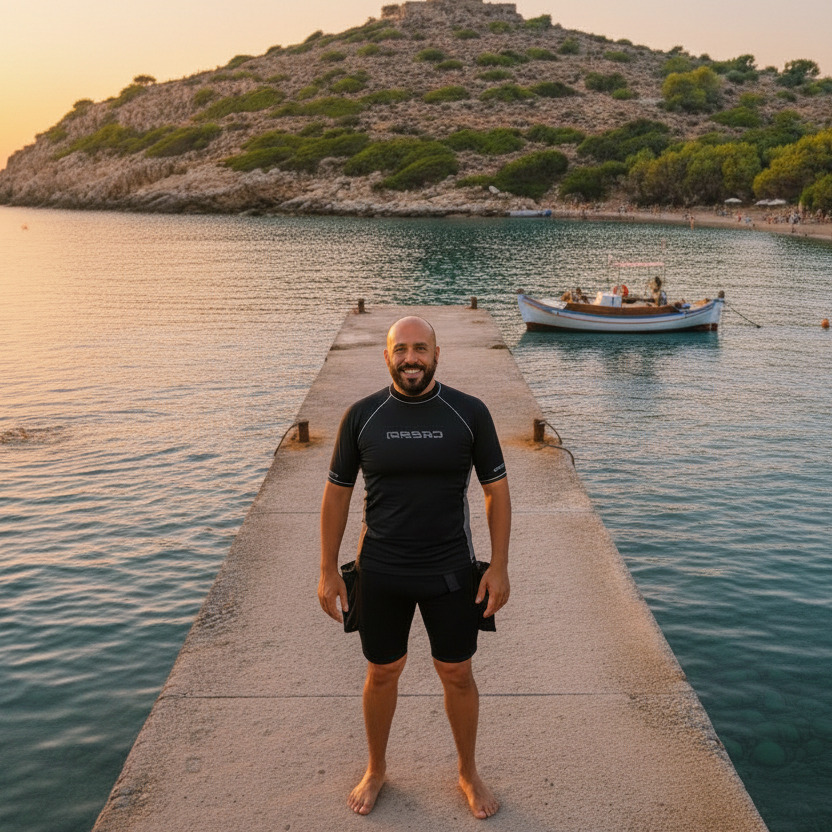

Física, fisiología, teoría de la descompresión y equipo a nivel experto.
La especialidad
teórica que separa a un buceador de un profesional.
Science of Diving es el punto en el que un buceador deja de simplemente seguir reglas impuestas y empieza a actuar bajo la lógica implacable de la naturaleza.
Es un curso fascinante si lo tratas (como haremos aquí) poniéndolo en el contexto real de expediciones críticas, fallos de equipo y planificación avanzada.
Comportamiento de los gases, cambios de temperatura y flotabilidad absoluta. Dejas de memorizar reglas y entiendes la física.
Qué ocurre en tu cuerpo bajo presión. Desde la toxicidad del oxígeno hasta la formación de microburbujas.
Modelos matemáticos actuales. Cómo tu ordenador calcula tus paradas y qué factores humanos ignora la máquina.
Mecánica de fluidos aplicada al equipo de soporte vital. Diferencias técnicas entre reguladores y sistemas.
Acceso continuo al material de estudio oficial desde cualquier dispositivo. Sin horarios fijos ni estrés.
Material de refuerzo en vídeo para las partes críticas: cálculos de EAD, gradientes y algoritmos.
Acreditación Science of Diving SSI inmediata tras superar el examen final online.
Capacidad para entender y cuestionar los perfiles de inmersión basados en la fisiología real.
Dominio de los conceptos necesarios para certificar como Divemaster o asistente de instructor.
Reducción del riesgo mediante el entendimiento profundo de los límites físicos del buceo.
"Un buceador avanzado es aquel que sabe lo que hace. Domina la teoría y tiene las habilidades para desarrollarlas junto a su compañero de manera segura. El agua es su zona de entrenamiento. Él lidera la aventura."
— Rafael Alcalde Molina · SSI Instructor · Cave Diver

Sin compromiso · Respondo en menos de 24h